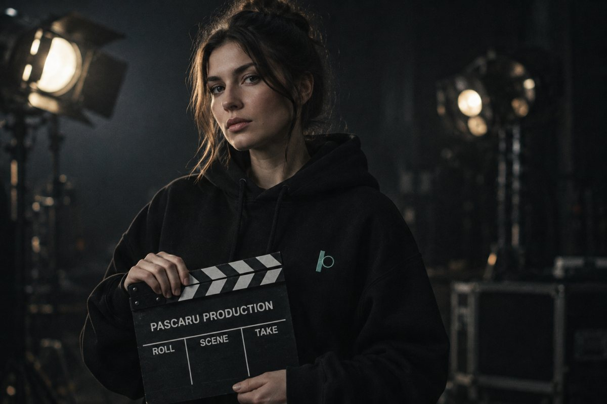
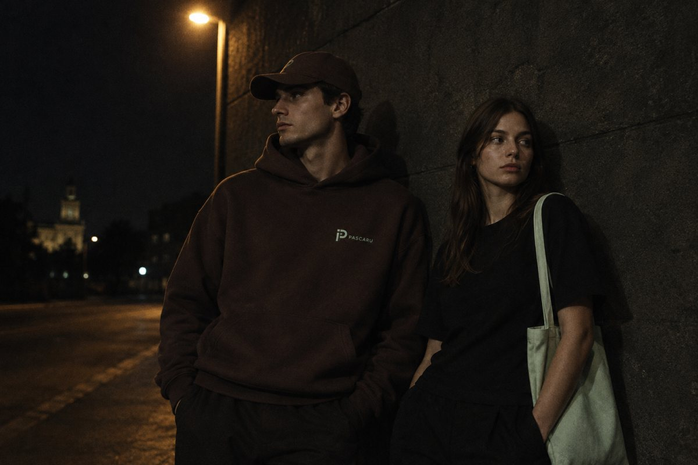
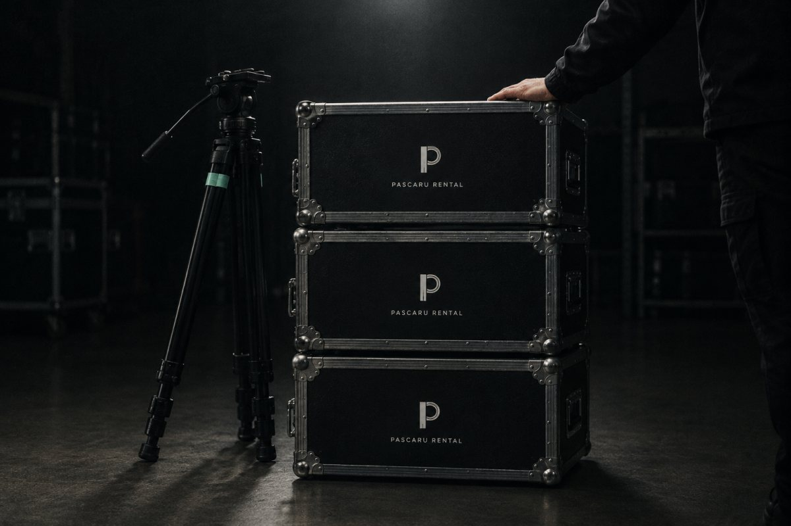
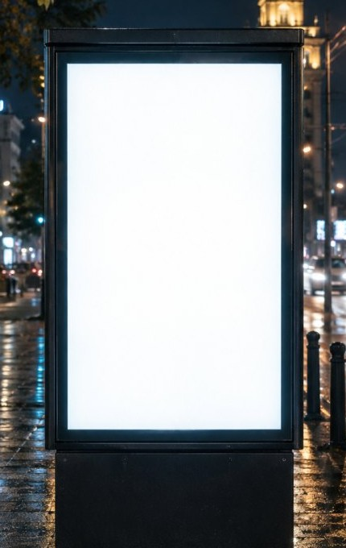
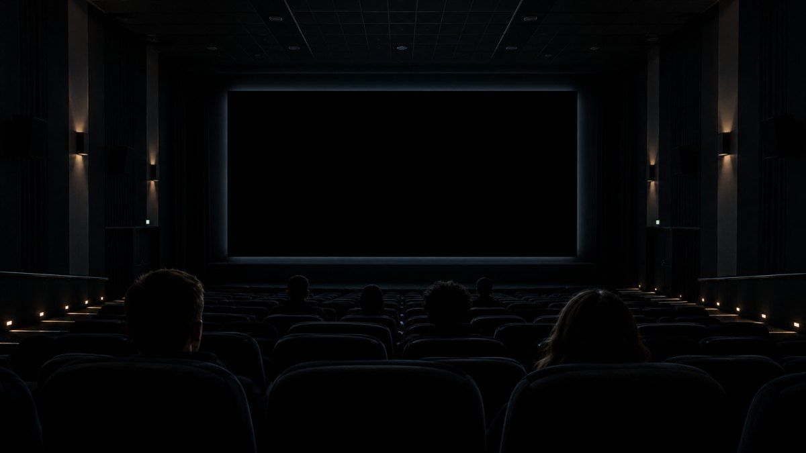
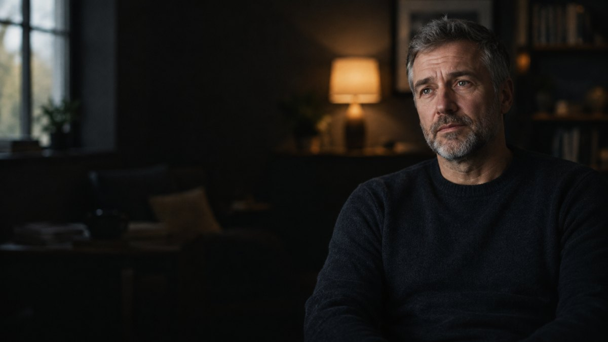
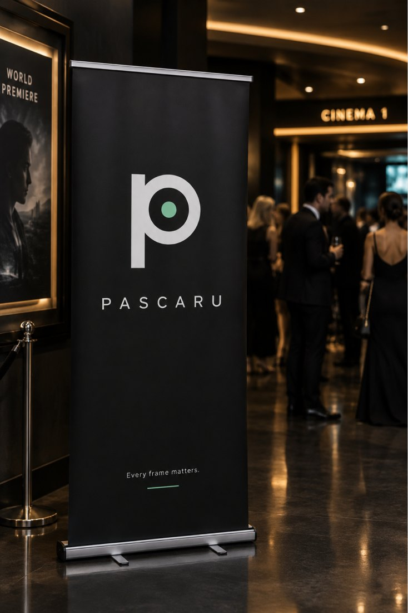
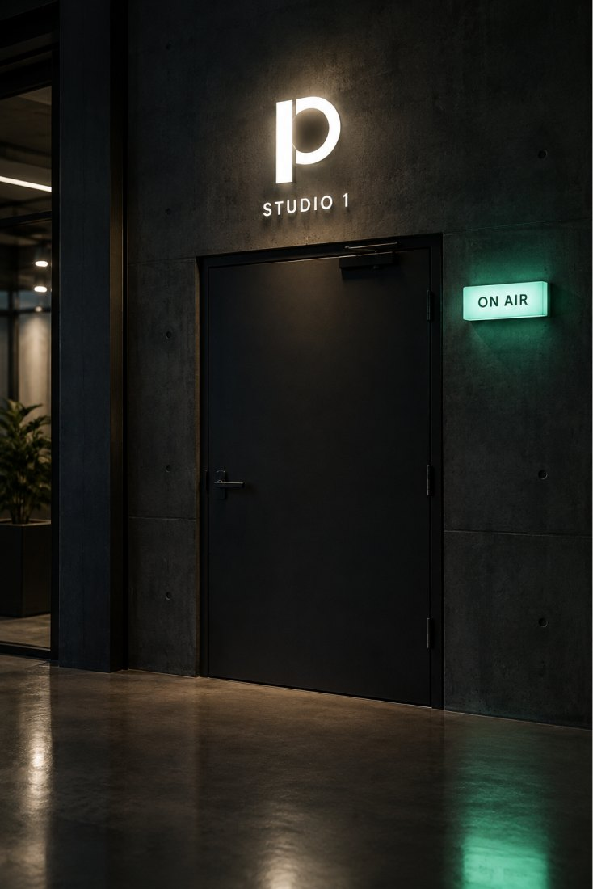

05 · Merch și echipamente
Purtat pe platou




07 · Online
Instagram în cadre de film
pascaru_production
Pascaru ProductionFilm · Seriale · TV · BroadcastingChișinău, Moldovapascaru.pro
UrmăreșteMesaj
INELUL DE FOC 2
Every frame matters.
RENTAL
BEHIND THE SCENESZiua 1
pe platou.pascaru.pro ↗
pe platou.pascaru.pro ↗
- 01Cadru de film pe tot postul, fără fundaluri colorate.
- 02Maximum un titlu și o etichetă pe imagine.
- 03Mint Leaf doar pentru etichete și accente mici.
- 04Monograma mică, în colț, nu în mijlocul cadrului.
08 · Pe hârtie
Papetărie și citylight

Every frame
matters.
matters.
info@pascaru.pro
pascaru.pro
str. Alexei Mateevici 60, Chișinău
pascaru.pro
str. Alexei Mateevici 60, Chișinău

PASCARU PRODUCTION PREZINTĂ
SERIALINELUL
DE FOC 2
DE FOC 2
URMĂREȘTE PE YOUTUBE
09 · Alte aplicații
Brandul în lume

PRODUCED BYPASCARU

[Nume Prenume]REGIZOR · PASCARU PRODUCTION


